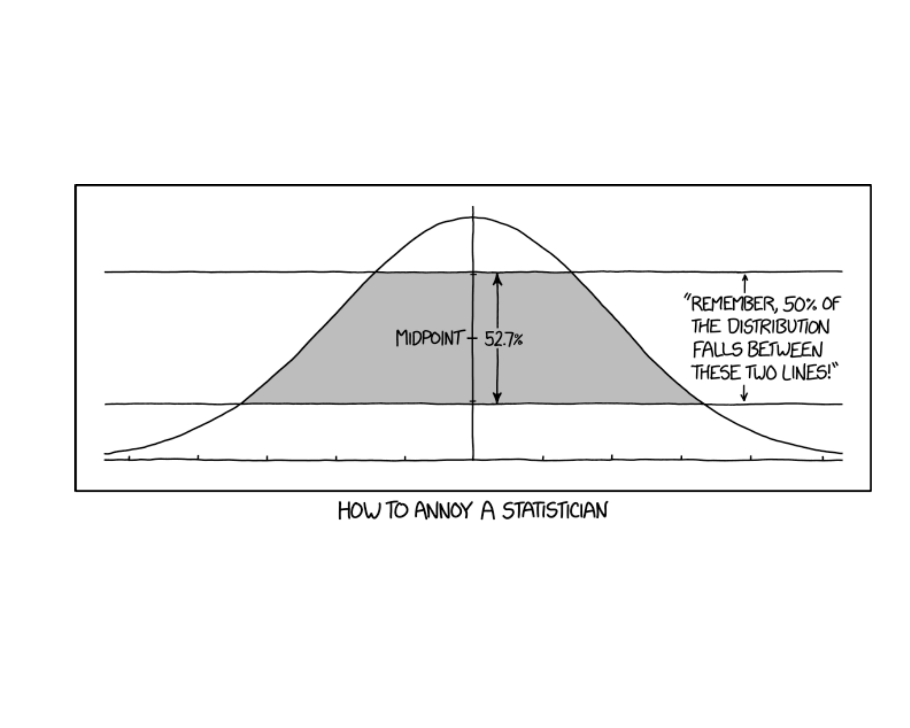
Lesson 12: Normal Distribution
Calendar
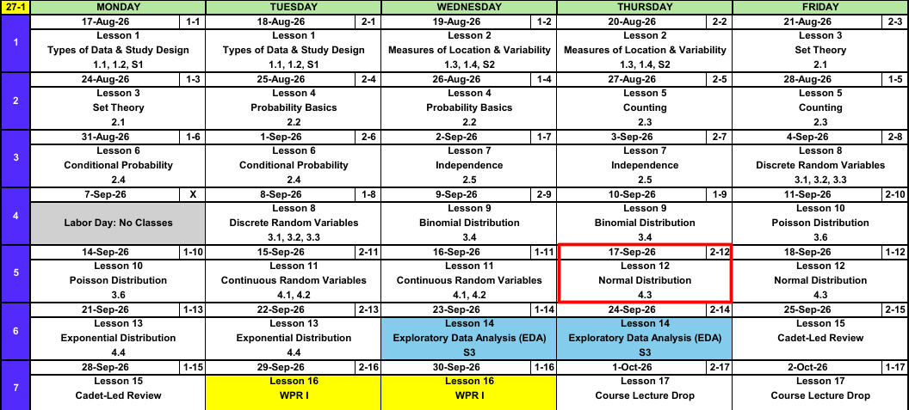
What We Did: Lessons 1 through 11
NoteReview: Data, Study Design, and Summaries (Lessons 1 and 2)
- Population vs sample, parameter (\(\mu\), \(\sigma\), \(p\)) vs statistic (\(\bar{x}\), \(s\), \(\hat{p}\)).
- Random sampling buys generalization, random assignment buys causation.
- Center: mean, median, trimmed mean. Spread: \(s^2\), \(s\), and the fourth spread \(f_s\).
NoteReview: Set Theory and Probability Basics (Lessons 3 and 4)
- Experiment, sample space \(\mathcal{S}\), event as a subset of \(\mathcal{S}\).
- Union is “or”, intersection is “and”, complement is “not”.
- Three axioms, the complement rule \(P(A') = 1 - P(A)\), and the addition rule \(P(A \cup B) = P(A) + P(B) - P(A \cap B)\).
- Equally likely outcomes: \(P(A) = N(A)/N\).
NoteReview: Counting (Lesson 5)
- Product rule: \(n_1 n_2 \cdots n_k\).
- Permutation (order matters): \(P_{k,n} = \dfrac{n!}{(n-k)!}\).
- Combination (order does not): \(\dbinom{n}{k} = \dfrac{n!}{k!\,(n-k)!}\).
NoteReview: Conditional Probability and Independence (Lessons 6 and 7)
- Conditional probability: \(P(A \mid B) = \dfrac{P(A \cap B)}{P(B)}\).
- Multiplication rule, Law of Total Probability, and Bayes’ Theorem.
- Independent: \(P(A \mid B) = P(A)\), tested with \(P(A \cap B) = P(A)\,P(B)\).
- \(P(\text{at least one}) = 1 - P(\text{none})\).
NoteReview: Discrete Random Variables (Lessons 8, 9, and 10)
- pmf: \(p_X(x) = P(X = x)\). cdf: \(F_X(x) = P(X \le x)\), a step function.
- Binomial: BINS, \(p(x) = \dbinom{n}{x} p^x (1-p)^{n-x}\), \(E(X) = np\), \(V(X) = np(1-p)\).
- Poisson: a rate and a window, \(p(x; \mu) = \dfrac{e^{-\mu}\mu^x}{x!}\), \(E(X) = V(X) = \mu\).
- \(E(X) = \sum_x x\,p_X(x)\) and \(V(X) = E(X^2) - [E(X)]^2\).
NoteReview: Continuous Random Variables (Lesson 11)
- Probability is area under the pdf: \(P(a \le X \le b) = \int_a^b f(x)\,dx\).
- \(P(X = c) = 0\), so \(\le\) and \(<\) give the same answer.
- cdf: \(F(x) = P(X \le x)\), and \(P(a \le X \le b) = F(b) - F(a)\).
- Percentile: solve \(F(c) = P(X \le c) = p\) for \(c\).
- \(E(X) = \int x\,f(x)\,dx\) and \(V(X) = E(X^2) - [E(X)]^2\).
Warm-Up
\[f_X(x) = \begin{cases} kx^3 & 0 \le x \le 2 \\ 0 & \text{otherwise} \end{cases}\]
a) Find \(k\).
TipAnswer
The total area is \(1\).
\[\begin{aligned} \int_0^2 kx^3 \, dx &= 1 \\ \frac{kx^4}{4} \bigg|_0^2 &= 1 \\ 4k &= 1 \\ k &= \frac{1}{4} \end{aligned}\]
\[f_X(x) = \begin{cases} \dfrac{x^3}{4} & 0 \le x \le 2 \\ 0 & \text{otherwise} \end{cases}\]
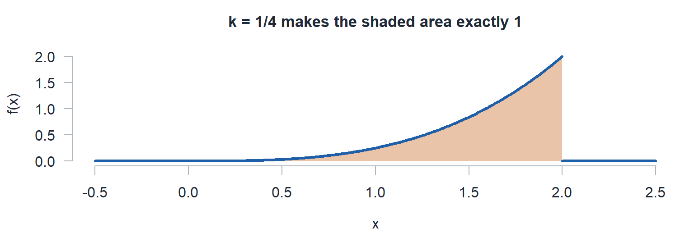
b) Fully define the cdf.
TipAnswer
\[F_X(x) = P(X \le x) = \int_0^x \frac{y^3}{4} \, dy = \frac{y^4}{16} \bigg|_0^x = \frac{x^4}{16}\]
\[F_X(x) = P(X \le x) = \begin{cases} 0 & x < 0 \\ \dfrac{x^4}{16} & 0 \le x \le 2 \\ 1 & x > 2 \end{cases}\]
c) What is the probability \(X\) lands more than one standard deviation above the mean or more than one standard deviation below it?
TipAnswer
\[\begin{aligned} E(X) &= \int_0^2 x \cdot \frac{x^3}{4} \, dx = \int_0^2 \frac{x^4}{4} \, dx = \frac{x^5}{20} \bigg|_0^2 = \frac{32}{20} = 1.6 \\ E(X^2) &= \int_0^2 x^2 \cdot \frac{x^3}{4} \, dx = \int_0^2 \frac{x^5}{4} \, dx = \frac{x^6}{24} \bigg|_0^2 = \frac{64}{24} = 2.6667 \\ V(X) &= E(X^2) - [E(X)]^2 = 2.6667 - 1.6^2 = 0.1067 \\ \sigma &= \sqrt{0.1067} = 0.3266 \end{aligned}\]
\[\mu \pm \sigma = 1.6 \pm 0.3266 = (1.2734,\ 1.9266)\]
\[P(X < 1.2734) + P(X > 1.9266) = F(1.2734) + 1 - F(1.9266)\]
\[= \frac{1.2734^4}{16} + 1 - \frac{1.9266^4}{16} = 0.1643 + 1 - 0.8611 = \mathbf{0.3032}\]
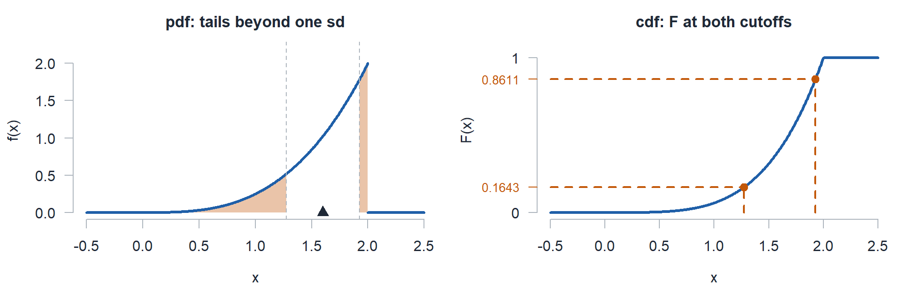
The endpoints carry zero probability.
d) Find the 20th percentile.
TipAnswer
Find \(c\) so that \(F(c) = P(X \le c) = 0.2\).
\[\begin{aligned} F(c) = P(X \le c) &= 0.2 \\ \frac{c^4}{16} &= 0.2 \\ c^4 &= 3.2 \\ c &= \sqrt[4]{3.2} = 1.3375 \end{aligned}\]
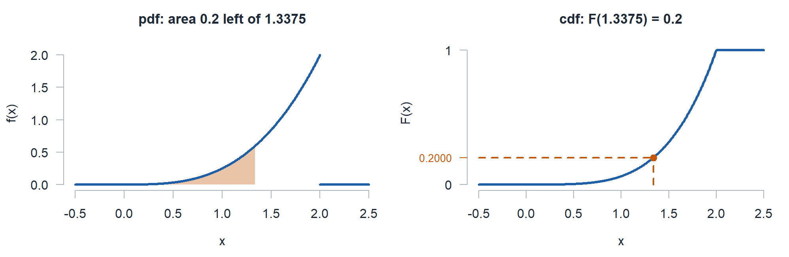
What We’re Doing: Lesson 12
Objectives
- Identify the normal and standard normal (\(z\)) distributions. (SLO 7)
- Standardize values with \(z = (x-\mu)/\sigma\) and compute probabilities using the \(z\) table. (SLO 7)
- Determine percentiles and \(z\) critical values for the normal distribution. (SLO 7)
Required Reading
Devore 4.3
Break!
Reese
DMath Frisbee!!
Math vs DPE
NotePreviously 0-0
1-0
14-5

The Takeaway for Today
NoteKey Concepts from Lesson 12
- The normal is a continuous distribution fixed by two parameters: \(X \sim N(\mu, \sigma^2)\), where \(E(X) = \mu\) and \(V(X) = \sigma^2\)
- Probability is still area under the pdf, so \(P(X = a) = 0\) and \(\le\) matches \(<\)
pnorm(x, mean, sd)is the cdf \(F(x) = P(X \le x)\). The third slot is the standard deviation, not the variance- Standardize with \(z = \dfrac{x - \mu}{\sigma}\) to land on \(Z \sim N(0, 1)\). The area never changes, so
pnorm(x, mu, sd)andpnorm(z)agree - The empirical rule: about 68%, 95%, and 99.7% of the area sits within 1, 2, and 3 standard deviations of \(\mu\)
qnorm(p, mean, sd)runs backwards, from a probability to the value that cuts it off- A critical value \(z_\alpha\) has area \(\alpha\) to its right
The Normal Distribution
The normal distribution is the most important one in all of probability and statistics.
Devore, Section 4.3
ImportantThe Normal pdf
\(X\) is normal with parameters \(\mu\) and \(\sigma^2\), written \(X \sim N(\mu, \sigma^2)\), if
\[f(x; \mu, \sigma) = \frac{1}{\sqrt{2\pi}\,\sigma}\, e^{-(x-\mu)^2 / (2\sigma^2)}, \qquad -\infty < x < \infty\]
- \(\mu\) locates the center. \(\sigma\) sets the spread.
- The support is all real numbers, so the curve never actually touches zero.
- The curve is symmetric about \(\mu\), which makes \(\mu\) the mean and the median.
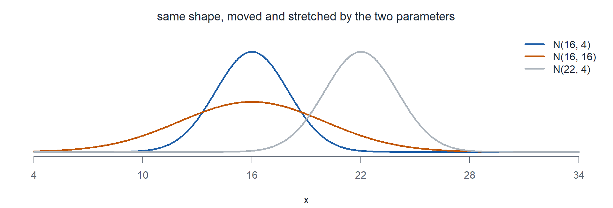
Mean, Variance, and Standard Deviation
For the normal, there is nothing to compute. The parameters are the mean and the variance.
ImportantMean and variance of a normal
\[E(X) = \mu, \qquad V(X) = \sigma^2, \qquad \sigma_X = \sigma\]
TipWhere those come from
Substitute \(x = \mu + \sigma z\), where \(\phi(z)\) is the standard normal pdf. Then \(\int \phi(z)\,dz = 1\), and \(z\,\phi(z)\) is odd, so it integrates to \(0\).
\[\begin{aligned} E(X) &= \int_{-\infty}^{\infty} x\,f(x)\,dx \\ &= \int_{-\infty}^{\infty} (\mu + \sigma z)\,\phi(z)\,dz \\ &= \mu(1) + \sigma(0) \\ &= \mu \\[1em] V(X) &= E\left[(X - \mu)^2\right] \\ &= \sigma^2 \int_{-\infty}^{\infty} z^2\,\phi(z)\,dz \\ &= \sigma^2 \left( \Big[-z\,\phi(z)\Big]_{-\infty}^{\infty} + \int_{-\infty}^{\infty} \phi(z)\,dz \right) \\ &= \sigma^2(0 + 1) \\ &= \sigma^2 \end{aligned}\]
The last step is integration by parts with \(u = z\) and \(dv = z\,\phi(z)\,dz\), so \(v = -\phi(z)\).
Fully Specify the Distribution
Cadet 2 mile run times average 16 minutes with a standard deviation of 2 minutes.
NoteFully specify
\[X \sim N(\mu = 16,\ \sigma^2 = 2^2)\]
- Designate the random variable. \(X\) is a cadet’s 2 mile run time in minutes.
- Name the distribution. Normal.
- Specify the parameters. \(\mu = 16\), \(\sigma = 2\).
So \(E(X) = 16\) minutes, \(V(X) = 4\), and \(\sigma = 2\) minutes.
The Cumulative Distribution Function
ImportantThe Normal cdf
\[F(x) = P(X \le x) = \int_{-\infty}^{x} \frac{1}{\sqrt{2\pi}\,\sigma}\, e^{-(t-\mu)^2 / (2\sigma^2)} \, dt\]
Same idea as Lesson 11: \(F(x)\) is the area under the pdf to the left of \(x\). This integral has no closed form, so R evaluates it.
Find \(P(X < 13)\).
\[P(X < 13) = F(13) = \int_{-\infty}^{13} \frac{1}{2\sqrt{2\pi}}\, e^{-(x-16)^2/8} \, dx\]
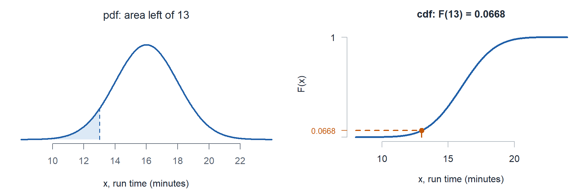
Computing Normal Probabilities in R
Importantpnorm is the cdf
\[\texttt{pnorm(x, mean, sd)} \;=\; F(x) \;=\; P(X \le x)\]
- The third argument is the standard deviation \(\sigma\), not the variance.
- Leave the arguments off and R assumes \(\mu = 0\) and \(\sigma = 1\).
dnormis the height of the pdf. It is not a probability.
Same questions as Lesson 11, now for the run times, \(X \sim N(16, 2^2)\).
a) \(P(X < 13)\)
TipAnswer
\[P(X < 13) = \int_{-\infty}^{13} \frac{1}{2\sqrt{2\pi}}\, e^{-(x-16)^2/8} \, dx = F(13)\]
pnorm(13, 16, 2) = 0.0668
b) \(P(X \le 13)\)
TipAnswer
\[P(X \le 13) = \int_{-\infty}^{13} \frac{1}{2\sqrt{2\pi}}\, e^{-(x-16)^2/8} \, dx = F(13)\]
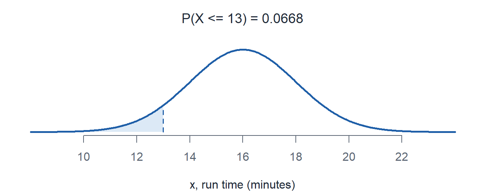
pnorm(13, 16, 2) = 0.0668
c) \(P(X > 19)\)
TipAnswer
\[P(X > 19) = \int_{19}^{\infty} \frac{1}{2\sqrt{2\pi}}\, e^{-(x-16)^2/8} \, dx = 1 - F(19)\]
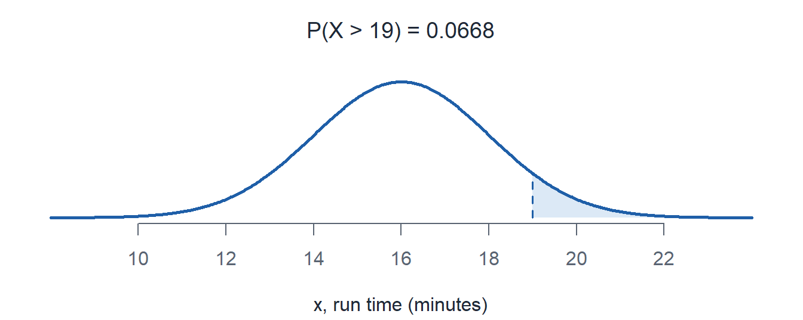
1 - pnorm(19, 16, 2) = 0.0668
d) \(P(X \ge 19)\)
TipAnswer
\[P(X \ge 19) = \int_{19}^{\infty} \frac{1}{2\sqrt{2\pi}}\, e^{-(x-16)^2/8} \, dx = 1 - F(19)\]
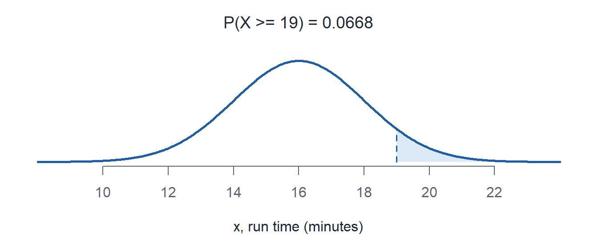
1 - pnorm(19, 16, 2) = 0.0668
e) \(P(15 < X < 18)\)
TipAnswer
\[P(15 < X < 18) = \int_{15}^{18} \frac{1}{2\sqrt{2\pi}}\, e^{-(x-16)^2/8} \, dx = F(18) - F(15)\]
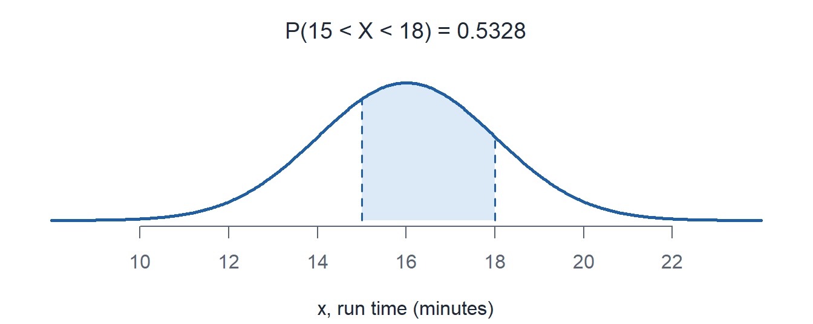
pnorm(18, 16, 2) - pnorm(15, 16, 2) = 0.5328
f) \(P(14 \le X \le 18)\)
TipAnswer
\[P(14 \le X \le 18) = \int_{14}^{18} \frac{1}{2\sqrt{2\pi}}\, e^{-(x-16)^2/8} \, dx = F(18) - F(14)\]
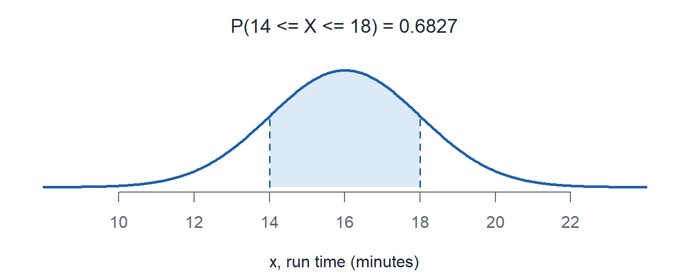
pnorm(18, 16, 2) - pnorm(14, 16, 2) = 0.6827
\(14\) and \(18\) are one standard deviation either side of \(\mu = 16\).
g) \(P(12 < X < 20)\)
TipAnswer
\[P(12 < X < 20) = \int_{12}^{20} \frac{1}{2\sqrt{2\pi}}\, e^{-(x-16)^2/8} \, dx = F(20) - F(12)\]
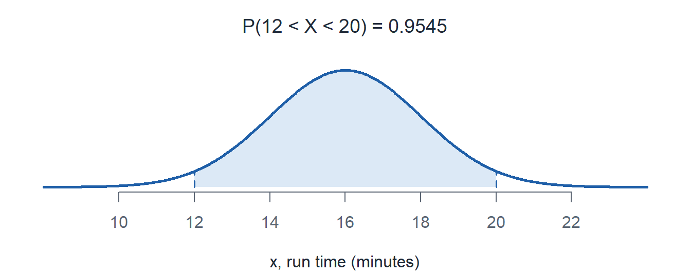
pnorm(20, 16, 2) - pnorm(12, 16, 2) = 0.9545
\(12\) and \(20\) are two standard deviations either side of \(\mu = 16\).
h) \(P(X = 16)\)
TipAnswer
\[P(X = 16) = \int_{16}^{16} \frac{1}{2\sqrt{2\pi}}\, e^{-(x-16)^2/8} \, dx = F(16) - F(16) = 0\]
pnorm(16, 16, 2) - pnorm(16, 16, 2) = 0.0000
Warningdnorm is not a probability
dnorm(16, 16, 2) = 0.1995
That is the height of the pdf at \(16\), not \(P(X = 16)\). A line has no width, so the probability is \(0\), and every \(\le\) can be read as \(<\).
The Standard Normal Distribution
ImportantStandardizing
If \(X \sim N(\mu, \sigma^2)\), then
\[Z = \frac{X - \mu}{\sigma} \sim N(0, 1)\]
Subtracting \(\mu\) slides the center to \(0\). Dividing by \(\sigma\) squeezes the spread to \(1\). \(Z\) is the standard normal, and a value of \(z\) says how many standard deviations \(x\) sits from the mean.
For a 13 minute run time,
\[z = \frac{x - \mu}{\sigma} = \frac{13 - 16}{2} = -1.5\]
which reads “13 minutes is 1.5 standard deviations below the mean.”
NoteThe area does not move
Standardizing relabels the axis. It does not change the picture.
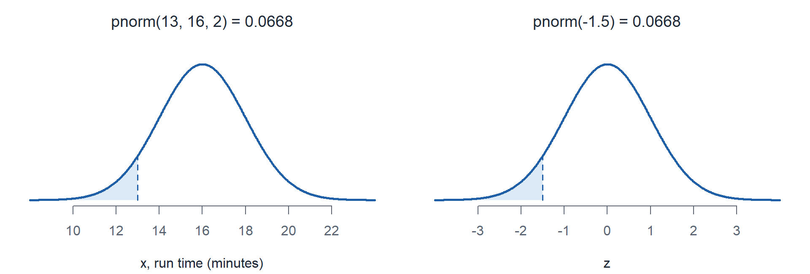
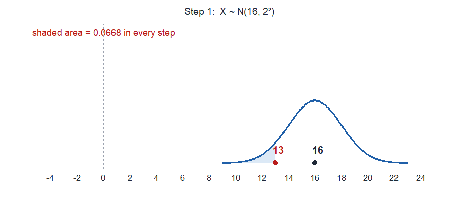
Finding Probabilities with \(X\) and \(Z\)
| Problem | Not standardized | Standardized | Answer |
|---|---|---|---|
| \(P(X < 13)\) | pnorm(13, 16, 2) |
pnorm(-1.5) |
0.0668 |
| \(P(X > 19)\) | 1 - pnorm(19, 16, 2) |
1 - pnorm(1.5) |
0.0668 |
| \(P(15 < X < 18)\) | pnorm(18, 16, 2) - pnorm(15, 16, 2) |
pnorm(1) - pnorm(-0.5) |
0.5328 |
NoteWhy do this?
A \(z\) score is a common scale. A cadet who runs 13 minutes (\(z = -1.5\)) and a cadet who deadlifts 240 pounds in a population with \(\mu = 200\) and \(\sigma = 30\) (\(z = 1.33\)) can now be ranked against their own distributions, even though minutes and pounds have nothing to do with each other.
It is also what every inference procedure in Block II runs on.
The Empirical Rule
Standardizing puts every normal on the same \(Z\) scale, so the area within \(k\) standard deviations of the mean is the same for every normal.
ImportantThe 68, 95, 99.7 rule
- \(P(\mu - \sigma \le X \le \mu + \sigma) = P(-1 \le Z \le 1) = 0.6827\)
- \(P(\mu - 2\sigma \le X \le \mu + 2\sigma) = P(-2 \le Z \le 2) = 0.9545\)
- \(P(\mu - 3\sigma \le X \le \mu + 3\sigma) = P(-3 \le Z \le 3) = 0.9973\)
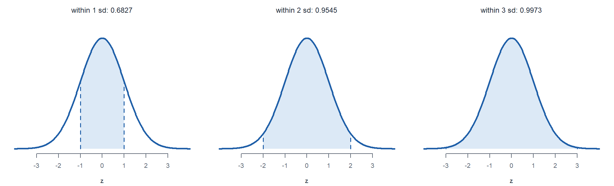
| Problem | Not standardized | Standardized | Answer |
|---|---|---|---|
| Within 1 sd | pnorm(18, 16, 2) - pnorm(14, 16, 2) |
pnorm(1) - pnorm(-1) |
0.6827 |
| Within 2 sd | pnorm(20, 16, 2) - pnorm(12, 16, 2) |
pnorm(2) - pnorm(-2) |
0.9545 |
| Within 3 sd | pnorm(22, 16, 2) - pnorm(10, 16, 2) |
pnorm(3) - pnorm(-3) |
0.9973 |
Parts f) and g) were exactly this: \(P(14 \le X \le 18) = P(-1 \le Z \le 1)\) and \(P(12 < X < 20) = P(-2 < Z < 2)\).
Going Backwards: Percentiles and Critical Values
ImportantDefinition: Percentile
The \((100p)\)th percentile is the value \(c\) that satisfies \[F(c) = P(X \le c) = p\]
90th percentile of run times. Find \(c\) so that \(F(c) = P(X \le c) = 0.9\).
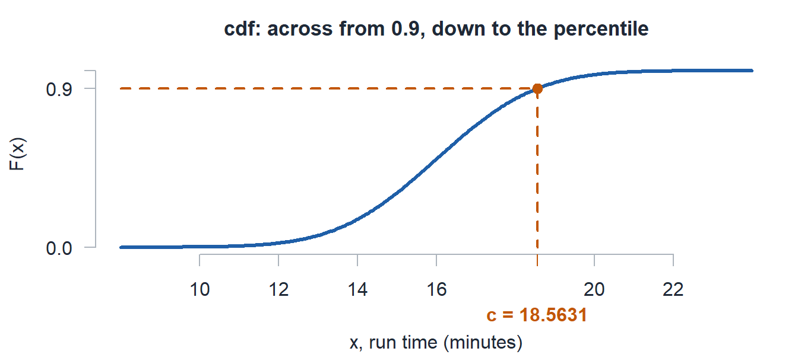
By hand, solve for \(c\):
\[F(c) = P(X \le c) = \int_{-\infty}^{c} \frac{1}{2\sqrt{2\pi}}\, e^{-(x-16)^2/8} \, dx = 0.9\]
There is no closed form to solve for \(c\), so R runs the cdf backwards.
Importantqnorm is the inverse cdf
\[\texttt{qnorm(p, mean, sd)} \;=\; c \text{ where } F(c) = P(X \le c) = p\]
qnorm(0.90, 16, 2) = 18.5631
The Same Percentile in \(z\) Units
The 90th percentile of \(Z\) is qnorm(0.9) = 1.2816. Unstandardize it with \(x = \mu + z\sigma\):
\[c = 16 + 2(1.2816) = 18.5631\]
The 90th percentile run time is \(1.2816\) standard deviations above the mean.
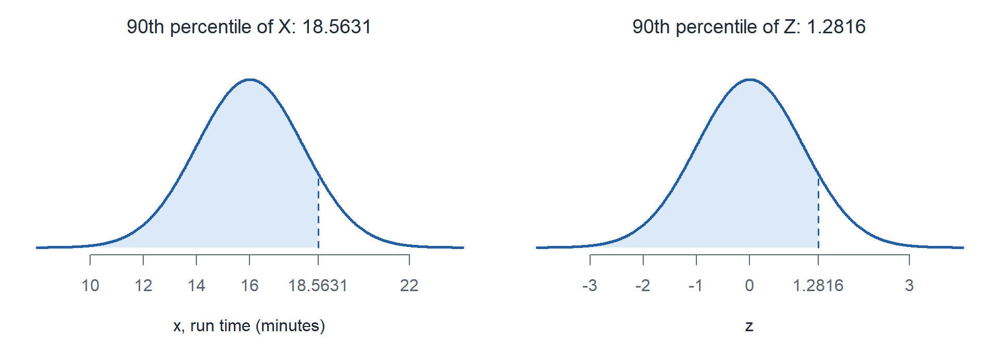
Critical Values
That \(1.2816\) has area \(0.90\) to its left, so it has area \(0.10\) to its right. Statisticians name it by the right tail: \(z_{0.10}\).
Important\(z_\alpha\)
\(z_\alpha\) has area \(\alpha\) to its right, so it is the \(100(1-\alpha)\)th percentile of \(Z\): qnorm(1 - alpha).
| Critical value | Area to the right | Area to the left | R-Lite | Answer |
|---|---|---|---|---|
| \(z_{0.10}\) | 0.10 | 0.90 | qnorm(0.90) |
1.2816 |
| \(z_{0.05}\) | 0.05 | 0.95 | qnorm(0.95) |
1.6449 |
| \(z_{0.025}\) | 0.025 | 0.975 | qnorm(0.975) |
1.9600 |
\(z_{0.10}\), the 90th percentile
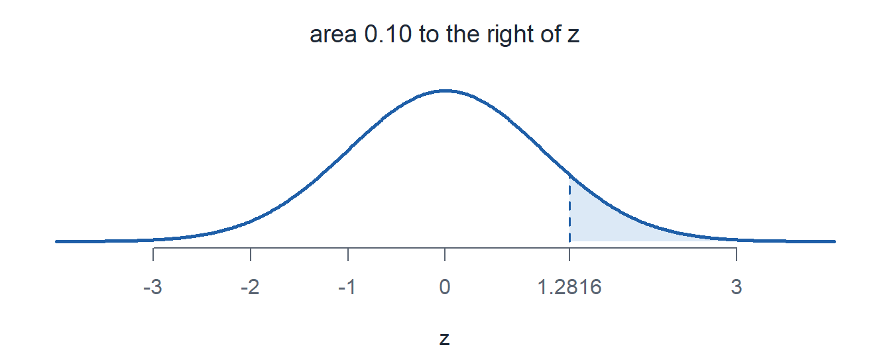
\(z_{0.05}\), the 95th percentile
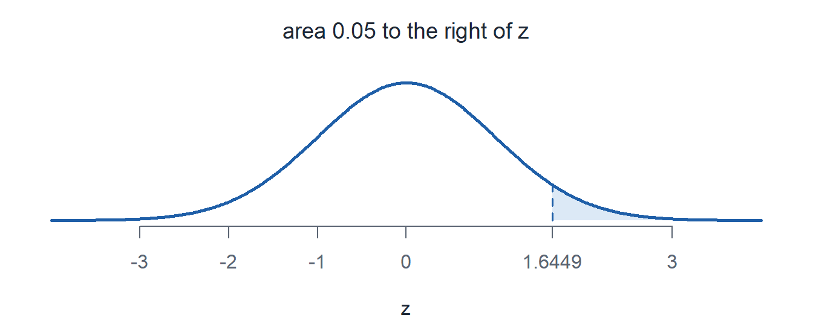
\(z_{0.025}\), the 97.5th percentile
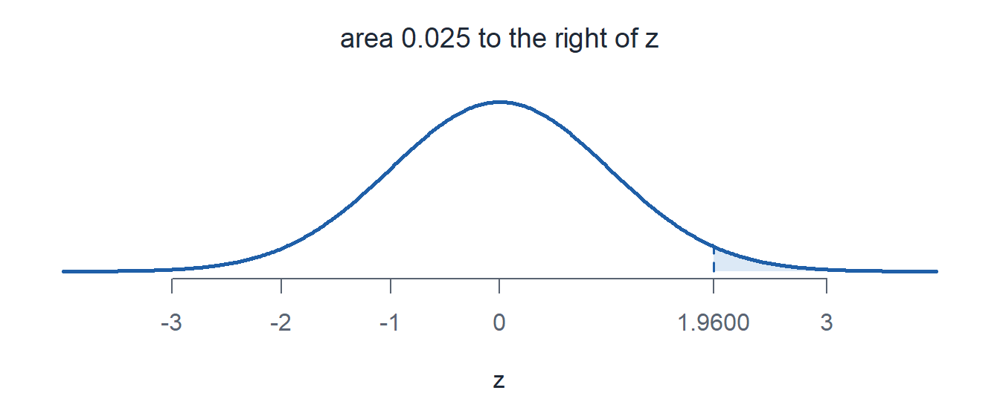
Those two numbers, \(1.645\) and \(1.96\), come back in every confidence interval in Block II.
Distributions So Far
Three named distributions. Naming one is not an answer. Fully specifying it is, and it is the same three steps every time: designate the random variable in words with units, name the distribution, specify the parameters as numbers.
| Binomial | Poisson | Normal | |
|---|---|---|---|
| Type | Discrete | Discrete | Continuous |
| Use it when | \(x\) successes in \(n\) fixed trials | \(x\) events in a window | Symmetric, bell shaped measurement |
| Fully specified | \(X \sim \text{Binom}(n,\ p)\) | \(X \sim \text{Pois}(\mu)\) | \(X \sim N(\mu,\ \sigma^2)\) |
| Parameters | \(n\) trials, \(p\) success probability | \(\mu = \lambda t\), expected count | \(\mu\) center, \(\sigma\) spread |
| Possible values | \(x = 0, 1, \dots, n\) | \(x = 0, 1, 2, \dots\) | \(-\infty < x < \infty\) |
| pmf or pdf | \(\dbinom{n}{x} p^x (1-p)^{n-x}\) | \(\dfrac{e^{-\mu}\mu^x}{x!}\) | \(\dfrac{1}{\sqrt{2\pi}\,\sigma} e^{-(x-\mu)^2/(2\sigma^2)}\) |
| \(E(X)\) | \(np\) | \(\mu\) | \(\mu\) |
| \(V(X)\) | \(np(1-p)\) | \(\mu\) | \(\sigma^2\) |
d, the pmf or pdf |
dbinom(x, n, p) |
dpois(x, mu) |
dnorm(x, mean, sd) |
p, the cdf \(P(X \le x)\) |
pbinom(x, n, p) |
ppois(x, mu) |
pnorm(x, mean, sd) |
q, the cdf backwards |
qbinom(area, n, p) |
qpois(area, mu) |
qnorm(area, mean, sd) |
| Our example | \(X \sim \text{Binom}(n = 5,\ p = 0.75)\) | \(X \sim \text{Pois}(\mu = 5)\) | \(X \sim N(\mu = 16,\ \sigma^2 = 2^2)\) |
| \(P(X = 3)\) | dbinom(3, 5, 0.75) |
dpois(3, 5) |
\(0\), use an interval |
| \(P(X \le 3)\) | pbinom(3, 5, 0.75) |
ppois(3, 5) |
pnorm(3, 16, 2) |
| \(90\)th percentile | qbinom(0.90, 5, 0.75) |
qpois(0.90, 5) |
qnorm(0.90, 16, 2) |
WarningWhere people lose points
dnormis a height, not a probability. For a continuous variable \(P(X = x) = 0\).dbinomanddpoisare probabilities. \(P(X = x)\) is real for a discrete variable.- The normal takes \(\sigma\), not \(\sigma^2\). The Poisson takes \(\mu\), not \(\lambda\).
- Leave
meanandsdoff and R assumes the standard normal, \(Z \sim N(0, 1)\). ptakes an \(x\) and returns an area.qtakes an area and returns an \(x\).
Board Problems
Problem 1: Ruck March Times
Times for a 12 mile ruck are normal with a mean of 105 minutes and a standard deviation of 12 minutes.
NoteQuestions
Fully specify the distribution, then find \(P(X < 90)\).
Find \(P(X > 120)\).
Find \(P(95 \le X \le 115)\).
The fastest 10% earn a pass. What time do they have to beat?
TipAnswers
- \(X\) is a cadet ruck time in minutes, \(X \sim N(\mu = 105,\ \sigma^2 = 12^2)\).
\[z = \frac{90 - 105}{12} = -1.25, \qquad P(X < 90) = \mathbf{0.1056}\]
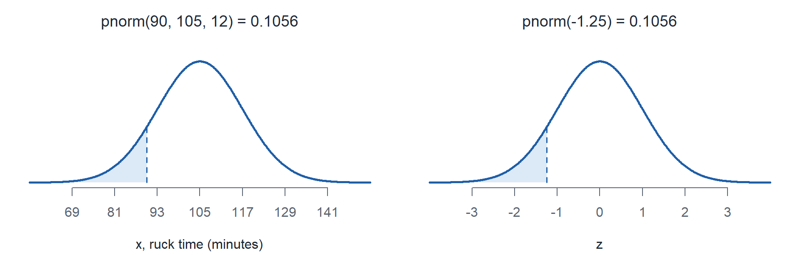
pnorm(90, 105, 12) = 0.1056
- \(z = (120-105)/12 = 1.25\), and by symmetry this matches part (a): \(\mathbf{0.1056}\).
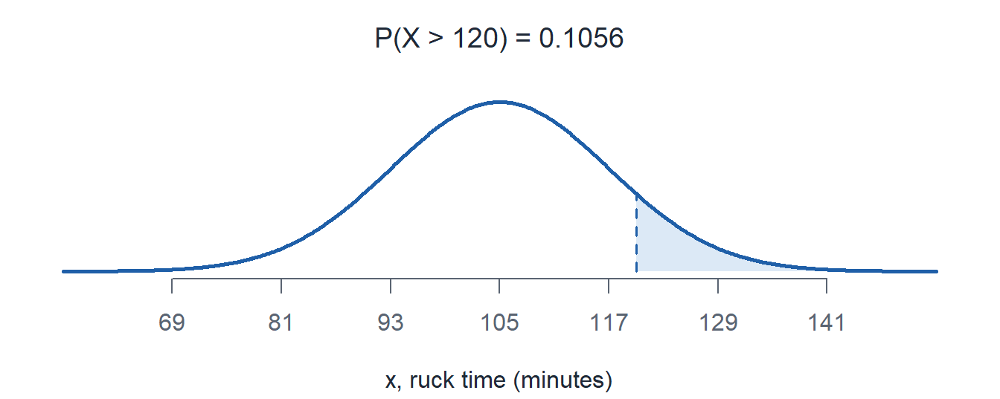
1 - pnorm(120, 105, 12) = 0.1056
- \[P(95 \le X \le 115) = F(115) - F(95) = \mathbf{0.5953}\]
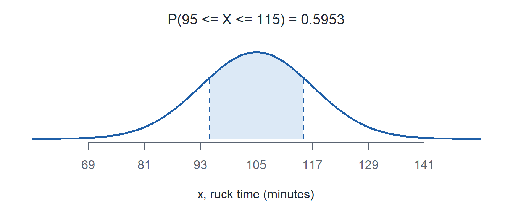
pnorm(115, 105, 12) - pnorm(95, 105, 12) = 0.5953
- The fastest 10% are the left tail, so this is the 10th percentile: \(\mathbf{89.62}\) minutes.
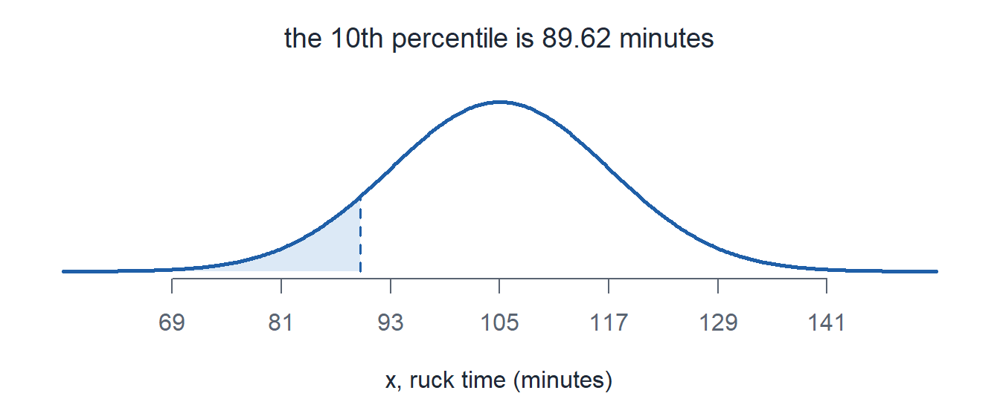
qnorm(0.10, 105, 12) = 89.6214
Problem 2: Mortar Round Weight
A production line fills 60mm mortar rounds to a weight that is normal with \(\mu = 4.2\) kg and \(\sigma = 0.05\) kg. A round is in spec if it weighs between 4.1 and 4.3 kg.
NoteQuestions
Without using R, what fraction of rounds are in spec? Which rule gets you there?
Confirm part (a) in R, then give the fraction rejected.
A round weighs 4.32 kg. How many standard deviations from the mean is that, and how unusual is a round at least that heavy?
TipAnswers
- The spec limits are exactly \(\mu \pm 2\sigma = 4.2 \pm 0.10\), so the empirical rule gives \(\mathbf{0.9545}\).
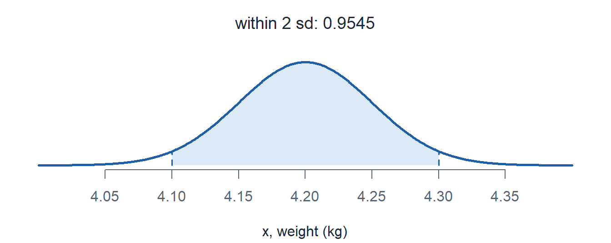
- Same number out of R, and the rejected fraction is the complement, \(1 - 0.9545 = \mathbf{0.0455}\), about 1 round in 22.
pnorm(4.3, 4.2, 0.05) - pnorm(4.1, 4.2, 0.05) = 0.9545
- \[z = \frac{4.32 - 4.2}{0.05} = \mathbf{2.4}, \qquad P(X \ge 4.32) = \mathbf{0.0082}\]
Fewer than 1 round in 100 is that heavy, so pull the line and check the fill.
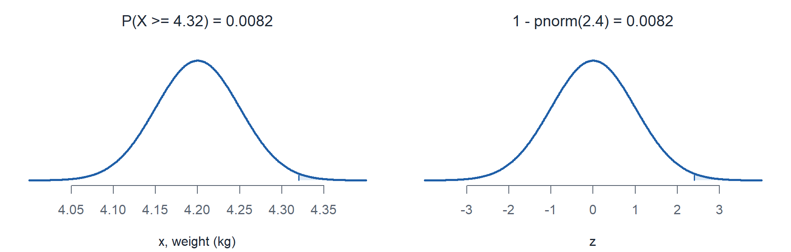
1 - pnorm(4.32, 4.2, 0.05) = 0.0082
Problem 3: Two Different Scales
Cadet A shoots 36 on a rifle qualification where scores are \(N(31, 3^2)\). Cadet B scores 285 on an indoor simulator where scores are \(N(268, 14^2)\).
NoteQuestions
Standardize both scores.
Which cadet performed better relative to the cadets they were shooting against?
What percentile is each cadet in?
TipAnswers
\[\begin{aligned} z_A &= \frac{36 - 31}{3} = \mathbf{1.6667} \\ z_B &= \frac{285 - 268}{14} = \mathbf{1.2143} \end{aligned}\]
- Cadet A. The raw scores are not comparable, 36 against 285 means nothing, but A is 1.67 standard deviations above their mean while B is 1.21 above theirs.
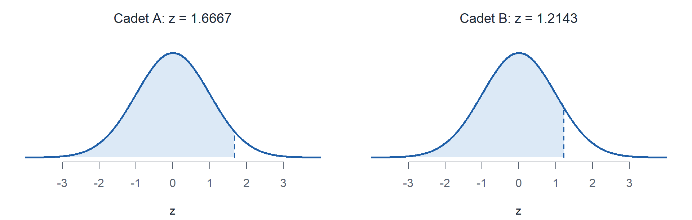
- Cadet A is in the 95.2nd percentile, Cadet B in the 88.8th.
pnorm(1.6667) = 0.9522
pnorm(1.2143) = 0.8877
Problem 4: Body Armor Sizing
Chest circumference for incoming cadets is normal with \(\mu = 39\) inches and \(\sigma = 2.2\) inches. The supply sergeant stocks a medium plate carrier that fits from 37 to 41 inches.
NoteQuestions
What fraction of cadets fit the medium?
Supply wants a small for the bottom 15% and a large for the top 15%. What two chest measurements are the cut points?
Out of a class of 1200, roughly how many need something other than a medium?
TipAnswers
- \[P(37 \le X \le 41) = F(41) - F(37) = \mathbf{0.6367}\]
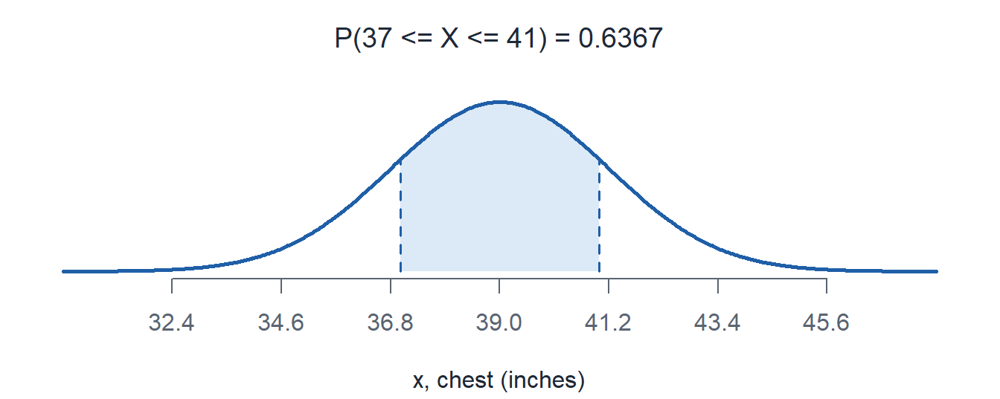
pnorm(41, 39, 2.2) - pnorm(37, 39, 2.2) = 0.6367
- The 15th and 85th percentiles: \(\mathbf{36.72}\) and \(\mathbf{41.28}\) inches.
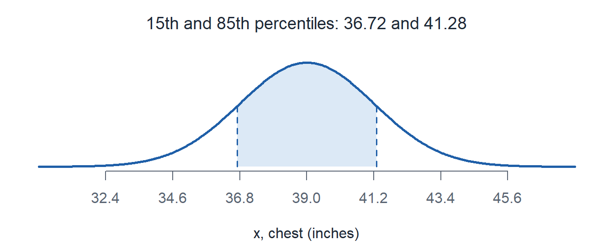
qnorm(c(0.15, 0.85), 39, 2.2) = 36.7198, 41.2802
- \(1 - 0.6367 = 0.3633\), and \(1200(0.3633) \approx \mathbf{436}\) cadets.
Problem 5: Stretch, Solve for the Parameters
Artillery rounds land at a range that is normal. Nobody tells you \(\mu\) or \(\sigma\), but the firing tables say 5% of rounds fall short of 100 meters and 10% carry past 140 meters.
NoteQuestions
Write the two standardized equations these facts give you.
Solve for \(\mu\) and \(\sigma\).
Find \(P(110 < X < 130)\).
TipAnswers
- \(P(X < 100) = 0.05\) puts 100 at \(z = -1.6449\), and \(P(X > 140) = 0.10\) puts 140 at \(z = 1.2816\).
\[\begin{aligned} \frac{100 - \mu}{\sigma} &= -1.6449 \\ \frac{140 - \mu}{\sigma} &= 1.2816 \end{aligned}\]
- Subtract the first equation from the second. The \(\mu\) terms cancel.
\[\begin{aligned} \frac{40}{\sigma} &= 1.2816 - (-1.6449) = 2.9265 \\ \sigma &= \frac{40}{2.9265} = \mathbf{13.6686} \\ \mu &= 100 + 1.6449(13.6686) = \mathbf{122.4829} \end{aligned}\]
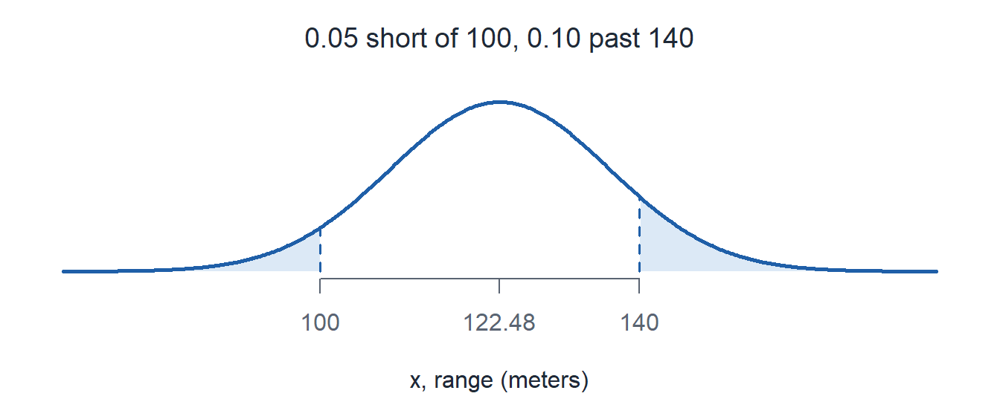
- \[P(110 < X < 130) = \mathbf{0.5283}\]
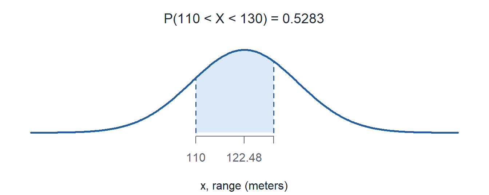
pnorm(130, 122.4829, 13.6686) - pnorm(110, 122.4829, 13.6686) = 0.5283
Before You Leave
Today
- \(X \sim N(\mu, \sigma^2)\) is fixed by two parameters, and those parameters are the mean and the variance
pnormis the cdf,qnormruns it backwards, and the third argument is \(\sigma\)- Standardizing with \(z = (x-\mu)/\sigma\) relabels the axis without moving any area
- A \(z\) score puts two different distributions on one scale
- A critical value \(z_\alpha\) has area \(\alpha\) to its right
Any questions?
Next Lesson
Lesson 13: Exponential Distribution
- Identify the exponential distribution and relate its parameter \(\lambda\) to the mean and standard deviation (both \(1/\lambda\))
- Compute exponential probabilities using the pdf and cdf
- Apply the memoryless property of the exponential distribution
Reading: Devore 4.4
Upcoming Graded Events
- WebAssign 4.3 - Due at the start of Lesson 13
- WPR I - Lesson 16 (covers Lessons 1-13)
- TEE - 15-18 Dec 2026